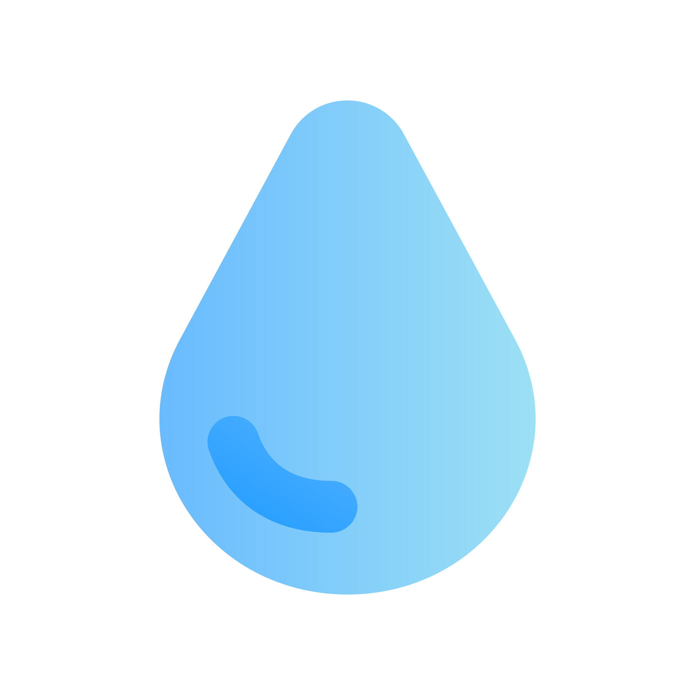
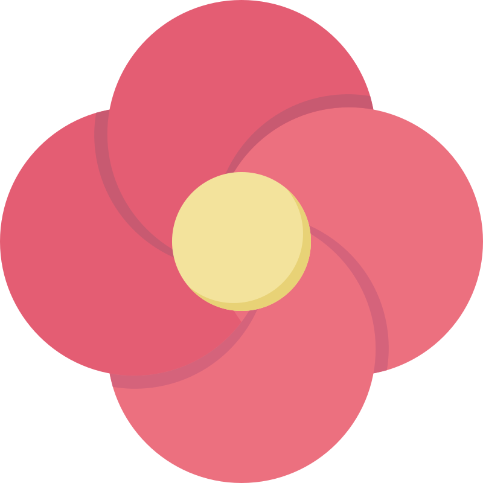
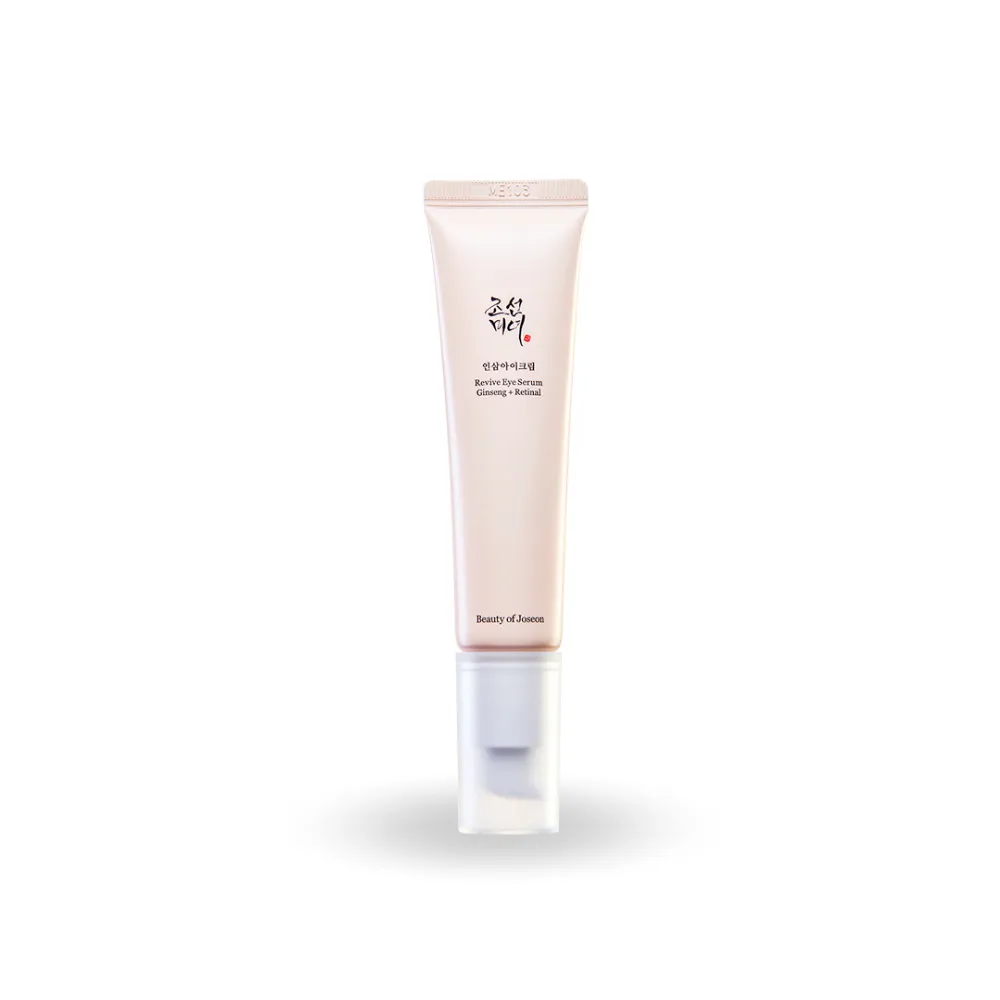
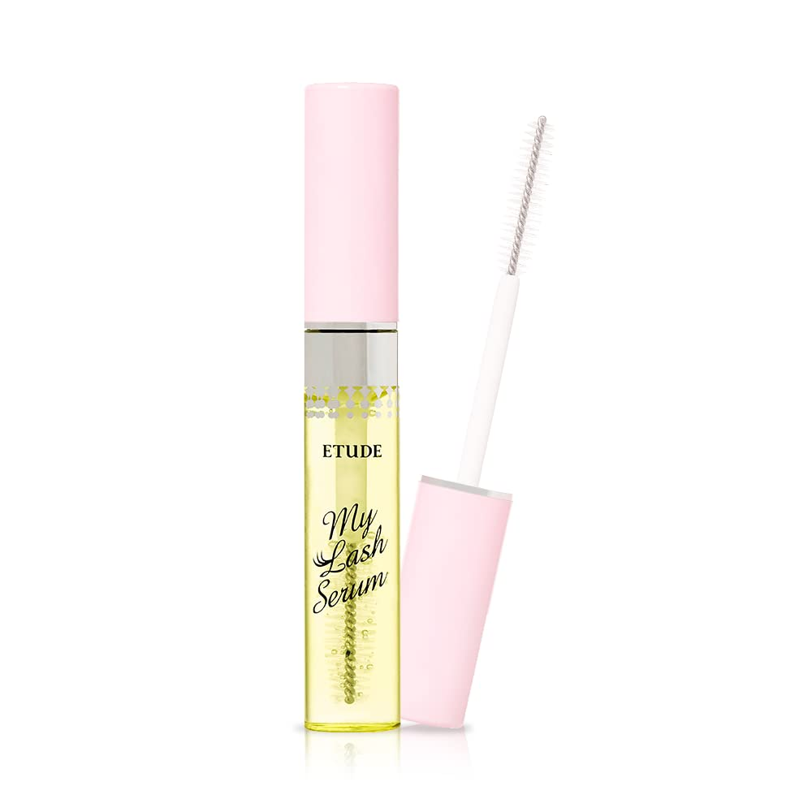
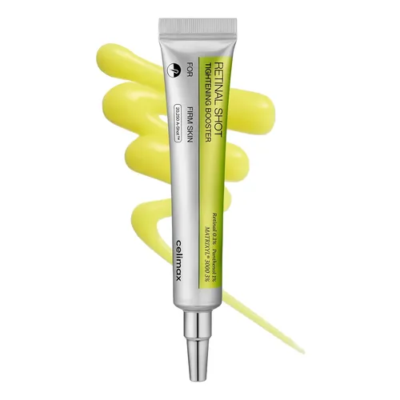

Hidratacion

Luminosidad

Piel sensible
Limpieza
Protección solar
Cuidado nocturno

Hidratacion
Luminosidad

Piel sensible
Limpieza
Protección solar
Cuidado nocturno

Sérum formulado con un 10% de Niacinamida, 4% de Ácido Tranexámico y 2% de Arbutina, ideal para quienes desean aclarar todo tipo de manchas y unificar el tono de la piel, logrando una piel hidratada y luminosa.

Suero reafirmante formulado con ginseng y retinal (vitamina A) para combatir los signos del envejecimiento. Mejora la elasticidad, atenúa arrugas y revitaliza el tono de la delicada piel alrededor de los ojos.

Limpiador suave en gel que elimina impurezas eficazmente sin alterar la barrera natural de la piel. Su fórmula con minerales de agua profunda mantiene el equilibrio hídrico, dejando el rostro fresco y confortable sin sensación de tirantez.

Sérum diseñado para mantener la piel radiante y saludable. Enriquecido con un 60% de extracto de propóleo y un 2% de niacinamida, ayuda a controlar la grasa, suavizar manchas oscuras e iluminar el rostro para un tono uniforme.

Sérum nutritivo que fortalece las pestañas desde la raíz. Su fórmula ayuda a que luzcan más largas, densas y saludables, protegiéndolas del estrés provocado por el maquillaje diario.

Booster concentrado formulado con retinal al 0.1% y péptidos, diseñado para brindar un cuidado profundo contra los signos del envejecimiento. Mejora la firmeza, reduce visiblemente el tamaño de los poros y suaviza la textura de la piel para un aspecto más joven y refinado.